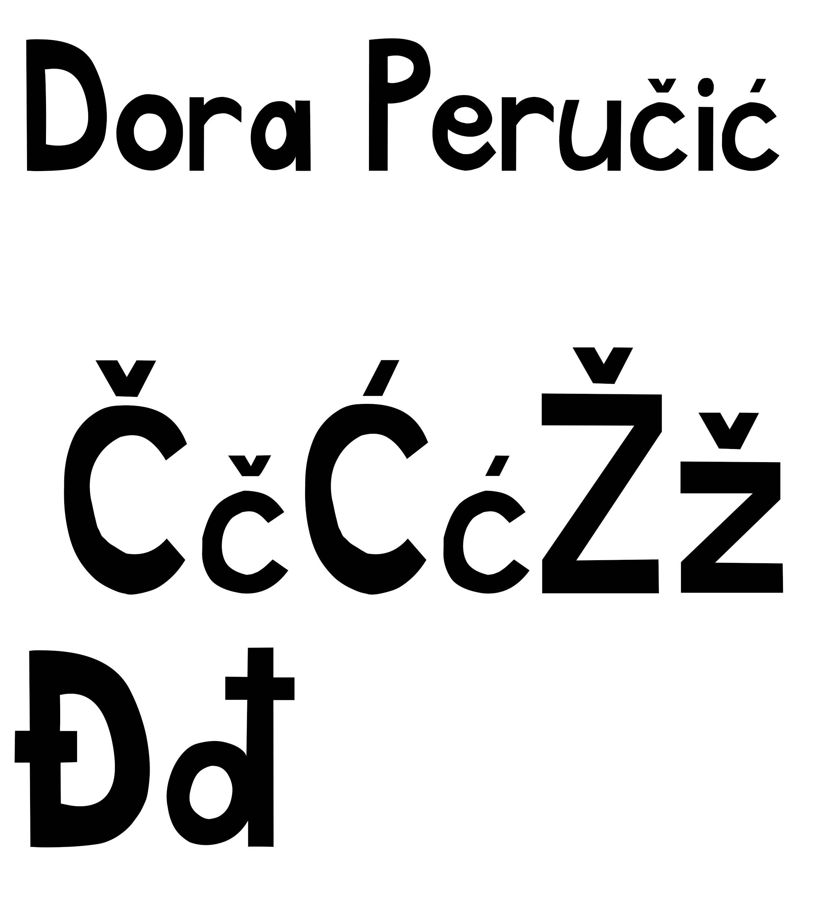
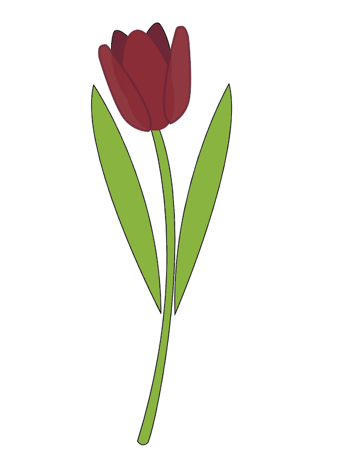
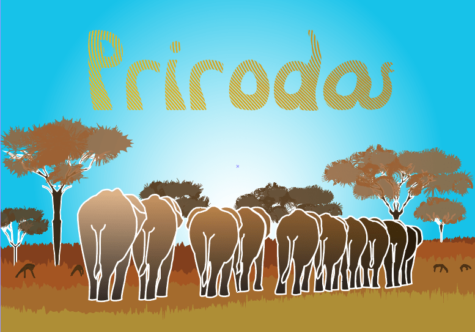
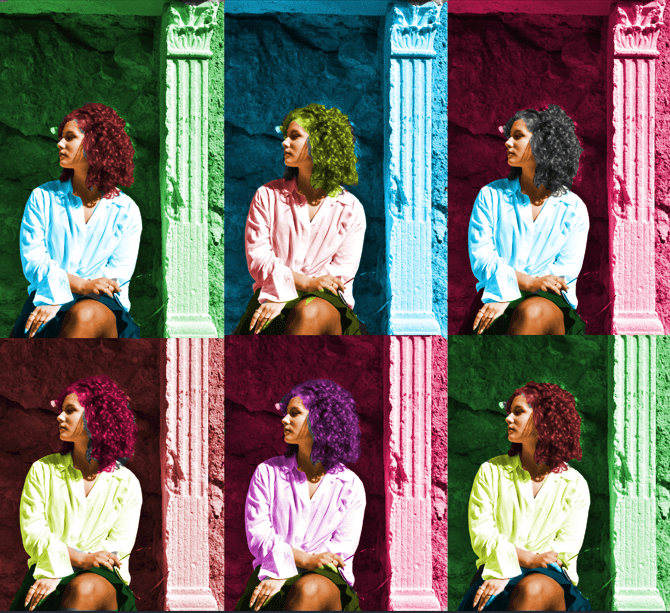
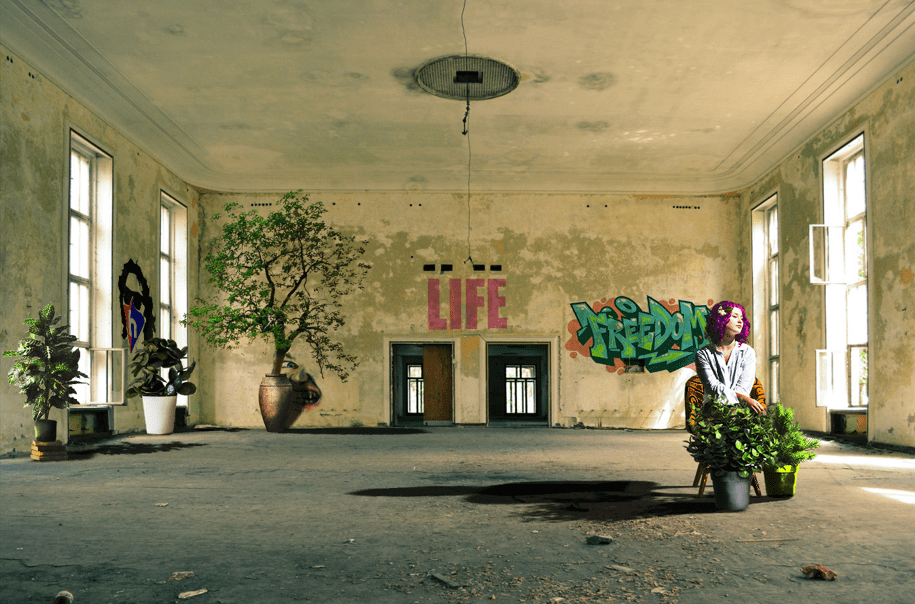

Vježbe
Vektorska grafika
Vježba 1
Na prvoj vježbi sam napravila vlastiti font u FontForgeu.
Vježba 2
Na drugoj vježbi sam primjenila bezierove krivulje za svoje inicijale.
Vježba 3
Na trećoj vježbi sam pomoću pen toola u Ai napravila cvijet.
Vježba 4
Na četvrtoj vježbi sam radilia s gradijentima i transparencijom, koristila sam se predloškom za ovaj rad.
Projektni zadatak 1
Za prvi projektni zadatak sam koristila zadani predložak slonova i primjenila sve tehnike koje smo do tada bili naučili.
Piksel grafika
Vježba 5
Na petoj vježbi sam koristila alate za retuširanje, rad je rađen u Ps.
Vježba 6
Na šestoj vježbi sam se bavila koloriranjem crno bijele slike, radila sam selekcije u alfa kanalima.
Vježba 7
Na sedmoj vježbi sam radila fotomontažu od zadanih slika.

Projektni zadatak 2
Za drugi projektni zadatak sam također koristila zadane predloške i tehnike naučene od prethodnih vježba.
Video/web
Vježba 8
Za osmu vježbu sam radila kinemagraf cvijeta.

Vježba 9
Za devetu vježbu sam radila video spajajući video isječke skinutih sa stock baza te nadodala efekte.